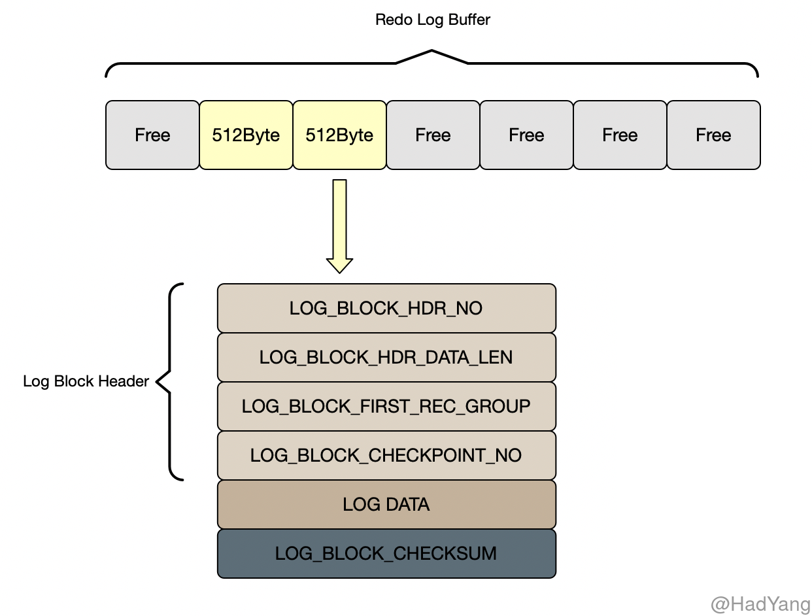
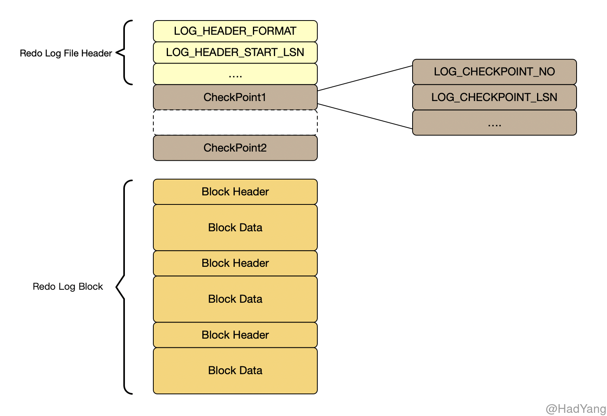
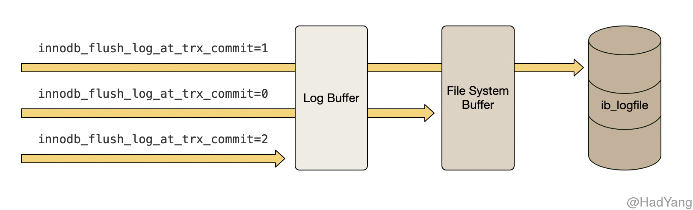
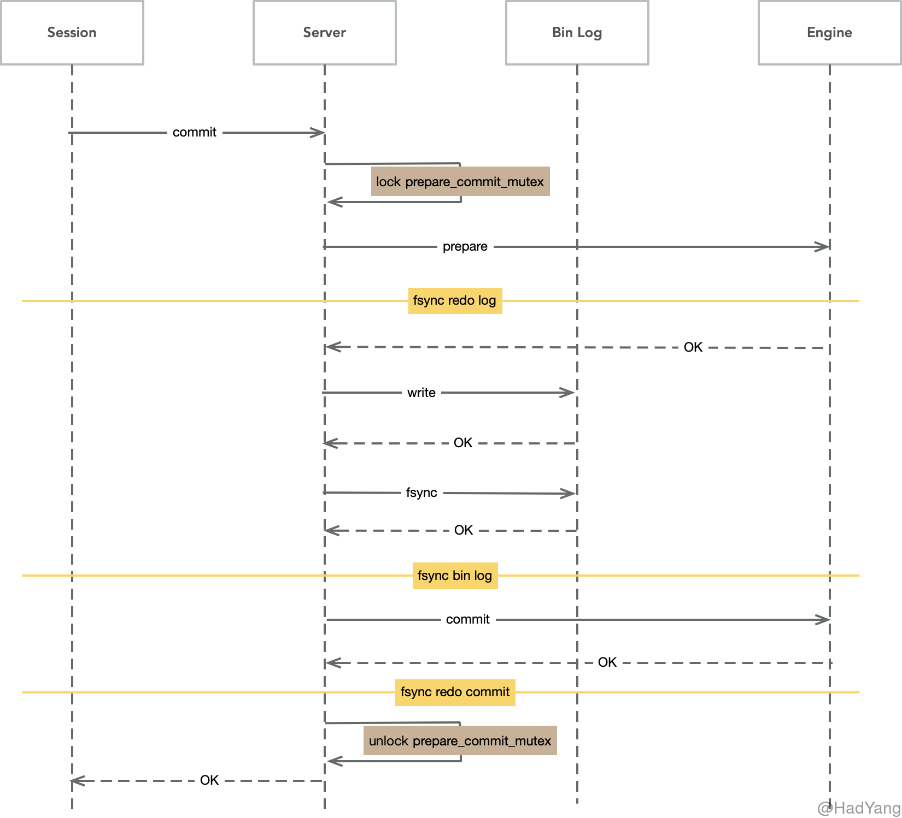

【Innodb】Redo Log
文章目录
Redo Log
Redo Log 是 Innodb 的事务日志之一，并且为 Innodb 提供 ACID 中一致性的保证。 在很多数据库设计中，都存在日志先行（WAL）的概念，Redo Log 就是 WAL 先行写入的日志。 Redo Log 记录了数据库文件的物理层面的修改记录，包括 用户触发的修改以及 Innodb 内部触发的修改行为。
LSN（Log Sequence Number） 表示 Redo 日志序列号，Innodb 保证其单调递增。LSN 无处不在，通过 LSN 可以找到对应的 Redo Log，因此其在故障恢复机制中发挥重要作用。
在 Innodb 内部 Redo Log 分为两个部分，分别是位于内存的 Redo Log Buffer，以及位于磁盘的 Redo Log File。Redo Log Buffer 和 Redo Log File 都是由 Redo Log Block 组成的数据结构，Redo Log Block 在内存和磁盘中均具有相同的数据结构。
Redo Log Block 以 512Byte 对齐，各类型的 Redo Log Block 都有统一的头部，包括 LOG_BLOCK_HDR_NO 、 LOG_BLOCK_HDR_DATA_LEN 、 LOG_BLOCK_FIRST_REC_GROUP 和 LOG_BLOCK_CHECKPOINT_NO，而 Redo Log Block 的内容根据不同类型有不同的结构。

LOG_BLOCK_HDR_NO：根据该块的 LSN 以及当前 Redo Log File 的起始 LSN 转换的块序列号LOG_BLOCK_HDR_DATA_LEN：写入该块的日志长度LOG_BLOCK_FIRST_REC_GROUP：块中第一个 Redo Log 在块中的长度LOG_BLOCK_CHECKPOINT_NO：记录当前块的 CheckPoint 序号
一个事务可以使用多个 Redo Log Block，这种情况下，可能导致最后一个 Block 剩余部分空间，为提高存储效率和性能，可以将下个 Redo Log 分配到最后一个 Block 中。
Redo Log File
Innodb 据参数 innodb_log_files_in_group 使用多个 Redo Log File 来持久化 Redo Log，多个 Redo Log File 作为一个 Log Group，采用 round-robin 方式循环写入 Redo Log File。当 Redo Log File 被覆盖时，要保证对应的脏页已刷新到磁盘，否则会暂停 Redo Log 的写入，并进行一次 Checkpoint 操作。
每个 Log Group 的第一个 Redo Log File 都会有 2K 的空间存储 Log File Header（包含当前 Log Group 中起始 LSN） 以及两个交替写入的 Checkpoint 信息（防止存储介质损坏而导致 Checkpoint 无法读取）。对 Redo Log File 的写入也 不完全 是顺序的，因为每次都会更新 Checkpoint 信息。在崩溃恢复的过程中，直接从 Log Group 的第一个 Redo Log File 获取 Checkpoint 信息即可。

Redo Log 的写入时机受参数 innodb_flush_log_at_trx_commit 控制，其有 0，1，2 三种取值。
1是默认策略，在每次事务提交时都持久化（执行 fsync） Redo Log0表示事务提交时不持久化 Redo Log，而是每秒定时刷新（执行 fsync） Redo Log 到磁盘上2表示事务提交时将 Redo Log 刷新到系统文件缓存中（不执行 fsync）

Redo Log 的每个 Block 大小与磁盘大小一致，因此 Redo Log 的写入也不需要 DoubleWrite 机制。
Log Write Ahead
InnoDB 以 512 字节一个 Block 的方式对齐写入 ib_logfile 文件，但现代文件系统一般以 4096 字节为一个 Block 单位。如果即将写入的日志文件块不在 OS Cache 时，就需要将对应的 4096 字节的 Block 读入内存，修改其中的 512 字节，然后再把该 Block 写回磁盘。
为解决这个问题，MySQL 5.7 引入了一个新参数： innodb_log_write_ahead_size ，当前写入文件的偏移量不能整除该值时，则补 0 ，多写一部分数据。这样当写入的数据是以磁盘 Block size 对齐时，就可以直接 write 磁盘，而无需 read-modify-write 这三步了。
Checkpoint
Checkpoint 是 Innodb 崩溃恢复中的重要的一个环节，在 Checkpoint 中用 LSN 表示系统写入磁盘的进度。Checkpoint 表示一个 安全点，在 Checkpoint 之前的所有数据库数据都是安全可靠的，在系统崩溃中不会丢失。
Checkpoint 的目的有三个：缩短数据库的恢复时间、保证 Buffer Pool 可用容量 以及 确保 Redo Log 可用存储容量。因此，系统会在四种情况下进行 Checkpoint：
- Master Thread CheckPoint （定时刷新）
- FLUSH_LRU_LIST CheckPoint （LRU 空闲页不足）
- Async/Sync Flush CheckPoint （Redo Log 不可用，即 Redo Log 空间不足）
- Dirty Page too much CheckPoint （Buffer Pool 脏页过多）
内部XA协议
Bin Log 是 MySQL 服务层的数据变更日志，记录了表数据中变更事件。当 MySQL 开启 Bin Log 后，为保证存储引擎层的事务日志和 Bin Log 一致，在 MySQL 内部使用了 XA 协议，并使用了一个全局的 prepare_commit_mutex 锁。
- 当事务提交时 Innodb 进行 Prepare 操作：持有
prepare_commit_mutex，写入 Redo Log 并 fsync - MySQL 服务层写入 Bin Log 并 fsync
- Innodb 存储引擎进行 Commit 操作：写入 Commit 标记，并释放
prepare_commit_mutex

内部的XA协议保证了事务在多个引擎和 Bin Log 之间的原子性，以 Bin Log 写入成功作为事务提交的标志，而 InnoDB 的 Commit 标志并不是事务成功与否的标志。
在崩溃恢复中，是以 Bin Log 中的 xid 和 Redo Log 中的 xid 进行比较，xid 在 Bin Log 里存在则提交，不存在则回滚。
- 已写入 Redo Log，未写入 Bin Log，则会回滚
- 已写入 Redo Log，写入 Bin Log，未写入 Commit 标记，则重新写入 Commit 标志，完成提交
通过 prepare_commit_mutex 对整个 2PC 过程进行加锁的方式，只有当上一个事务 commit 后释放锁，下个事务才可以进行 prepare 操作，这样完全串行化的执行保证了顺序一致。
存在的问题是 prepare_commit_mutex 的锁机制会严重影响高并发时的性能，在每个事务执行过程中， 都会至少调用 3 次刷盘操作，多个小 IO 是非常低效的方式。
BLGC
为了提高并发性能，肯定要细化锁粒度。MySQL 5.6 引入了 Bin Log 的组提交（BLGC）功能：prepare 阶段不变，只针对 commit 阶段，将 commit 阶段拆分为三个过程：
- flush stage 多个线程按进入的顺序将 Bin Log 从 cache 写入文件（不刷盘）
- sync stage 对 Bin Log 文件做 fsync 操作（多个线程的 Bin Log 合并一次刷盘）
- commit stage 各个线程按顺序做 InnoDB commit 操作
其中，每个阶段有 Lock 进行保护，因此保证了事务写入的顺序。
实现方法是，在每个 stage 设置一个队列，第一个进入该队列的线程会成为 Leader，后续进入的线程会阻塞直至完成提交。Leader 线程会领导队列中的所有线程执行该 stage 的任务，并带领所有 Follower 进入到下一个 stage 去执行，当遇到下一个 stage 为非空队列时，Leader 会变成 Follower 注册到此队列中。
这种组提交的优势在于锁的粒度减小，三个阶段可以并发执行，从而提升效率。
BLGC 优化
MySQL 5.6 的组提交逻辑中，每个事务各自做 prepare 并写 Redo Log，只有到了 commit 阶段才进入组提交，因此每个事务的 Redo Log fsync 操作成为性能瓶颈。
在 5.7 版本中，修改了组提交的 Flush 阶段，在 prepare 阶段不再让线程各自执行 Flush Redo Log 操作，而是推迟到组提交的 Flush 阶段，Flush stage 修改成如下逻辑：
- 收集组提交队列，得到 Leader 线程，其余 Follower 线程进入阻塞
- Leader 调用
ha_flush_logs做一次 Redowrite/fsync，即一次将所有线程的 Redo Log 刷盘 - 将队列中 thd 的所有 Bin Log cache 写到 Bin Log 文件中
这个优化是将 Redo Log 的刷盘延迟到了 BLGC 的 Flush stage 之中，Sync stage 之前。通过延迟写 Redo Log 的方式，为 Redo Log 做了一次组写入，这样 Bin Log 和 Redo Log 都进行了优化。